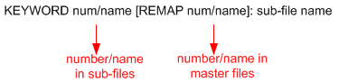

Collision handling
When you use setup management tool in the assemble mode and merge the sub-files specified in the master file, definition collisions may happen among the sub-files.
The setup management tool can handle these collisions automatically by changing the collision
definition name/number. A keyword REMAP is defined to rename the collision
definition name/number. The usage format of REMAP is:

The collision automatic renaming strategy is:
- If the original name is a number, the new name will be the smallest usable number.
- If the original name is a string or acombination of numbers and strings, the new name will be
the
keyword_smallest usable number.
You can also specify a name for the collision definition by inserting [REMAP
num/name] manually into the setup master file. It will be handled by the setup
management tool.
When the collision definition is renamed, the other definitions in the setup file or related setup files may also need to be updated due to the renaming. The setup management tool will update the related parts or setup files according to the master file. (See Collision handling for timing master file)
A keyword Bind is defined to clearly specify the setup files that need to be
updated after the collision is resolved. The usage format of Bind is:
[Bind: file a; file b]
or
[Bind: file a;
file b]
If you use the Bind keyword to specify the related setup files manually:
- Make sure to bind all the related files according to the resolved collision. Otherwise you will get a wrong setup file.
- Make sure no duplication of definition in the binding files. Otherwise, an error message will be thrown out and you need to change the master file.
All the changed content during the collision handling will be logged in the file changelog.txt, which locates in the same directory with the setup master file.
Example
See the examples in each kind of setup master file collision handling.
Functional changes
- Introduced in SmarTest 6.5.0